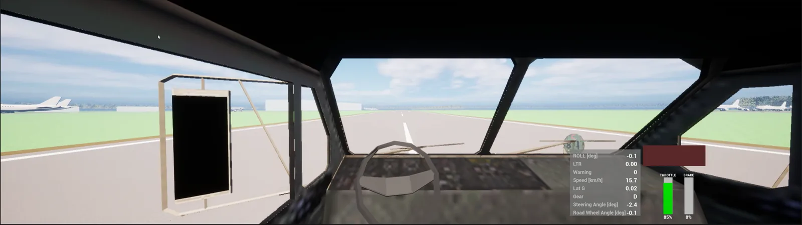
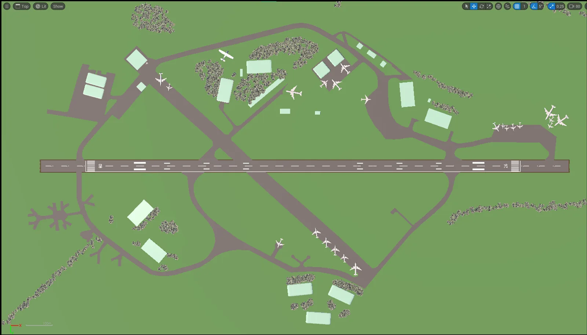
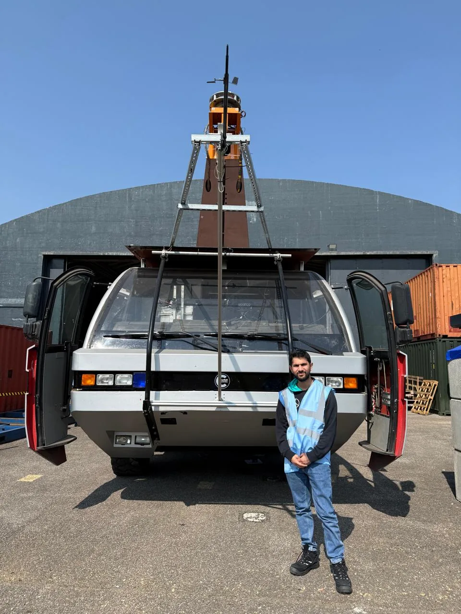

MSc Thesis · Cranfield University · 2026
HGV Driver Simulator for Roll Stability
A reduced-order, real-time driver-in-the-loop simulator that estimates how close a four-axle 8×8 test truck is to wheel lift while it is being driven.

- 0.2%Implementation error against the analytical steady-state solution (1° steer, 20 m/s)
- 14.8%Yaw-rate NRMSE against measured test-truck data, slalom (16.5% sustained cornering)
- ~50%Predicted drop in wheel-lift threshold at the 0.8–0.9 Hz roll resonance
- 60+ FPSCoupled real-time run at reduced visual settings (35–45 FPS at full)
The problem
The test vehicle is a modified Rosenbauer Panther 8×8 with a roof-mounted test asset. With a mass of 28,828 kg, a centre of gravity 3.27 m above the ground and a 2.5 m track, its static stability factor is
SSF = T / 2h = 2.5 / (2 × 3.27) = 0.382
That means wheel unloading begins at roughly 0.38 g (3.75 m/s²) in a quasi-static manoeuvre, which is low enough to reach in ordinary driving.
Can a reduced-order, real-time model reproduce the vehicle's lateral and roll response and provide a continuous estimate of proximity to wheel unloading for driver-in-the-loop use?
What I built
- Vehicle model: a four-axle single-track lateral/yaw model with two steered axles (δ2 = 0.41 δ1), coupled to single-DoF roll about a fixed axis and point-mass longitudinal speed, in MATLAB/Simulink.
- Rollover index: a continuous dynamic load-transfer ratio, with a HUD warning at LTR ≥ 0.80 to leave margin for the transient peak, which runs about 13% above the quasi-static value.
- Driver-in-the-loop rig: Moza wheel, pedals and P–R–N–D selector drive the Simulink model (fixed-step ode3, 60 Hz), which overrides Unreal Engine's own vehicle physics.
- Environment: Cotswold Airfield, traced in Blender and imported into Unreal Engine.
- Parameter provenance: every parameter classed as measured, derived, predecessor study, literature or assumed, so the confidence in each input is explicit.

Why a reduced-order model?
IPG CarMaker's passenger-car architecture couldn't represent four axles, TruckMaker wasn't licensed to the project, and a full multibody model would have needed hardpoints, bushes and tyre data that weren't available. A higher-order model built on unvalidated parameters would add degrees of freedom without adding credibility, so the model fidelity was matched to the evidence available.
Verification and validation
Verification checks the model was implemented correctly, against the analytical solution. Validation checks it matches the real vehicle, against measured test data.
| Check | Output | Result |
|---|---|---|
| Verification: 1° steer, 20 m/s | Yaw rate, lateral acceleration, roll angle | Within 0.2% of the analytical solution |
| Validation: TEST 25 slalom | Yaw rate | NRMSE 14.8% |
| Validation: TEST 25 sustained cornering | Yaw rate | NRMSE 16.5% |
| Validation: TEST 25 | Lateral acceleration | NRMSE 21.9–25.8% |
| Validation: TEST 25, bare-truck parameters | Roll angle | NRMSE 36.6–39.9% |
| Asset-equipped configuration | Roll angle | Not validated: no configuration-matched test data |
NRMSE is the RMS error divided by the RMS of the measured signal. Timing and direction are reproduced, and the remaining error is mainly in magnitude.
Results
- Roll resonance halves the threshold. The predicted wheel-lift threshold is about 0.4 g for slow steering, but falls to about 0.2 g near the 0.8–0.9 Hz roll mode.
- CoG height dominates rollover. Sweeping CoG height from 2.6 to 3.9 m raises the peak LTR under a 0.3 g ramp from 0.66 to 1.05, which is predicted wheel lift.
- Longitudinal CoG dominates handling. Moving the CoG from 2.47 to 5.07 m aft of axle 1 takes the understeer gradient from +2.97 to −4.44 deg/g, with neutral steer at about 3.58 m.
- Mass matters less. Varying mass from 23.3 to 31.3 t moves the understeer gradient only from +0.23 to +0.31 deg/g.
Checking inherited data
The roll inertia inherited from the identification report, 1.65×104 kg·m², gave a 3.0 Hz roll mode with ζ = 0.75. I tested it with the parallel-axis theorem. Read as inertia about the roll axis, it implies a negative inertia about the CoG, which is physically impossible. Re-interpreting it as CoG inertia gives 1.92×105 kg·m², a 0.89 Hz roll mode and ζ = 0.22. That agrees with an earlier study of the same vehicle (0.72 Hz) and with published heavy-truck data (0.93 Hz).
Limitations and next steps
| Limitation | Consequence | Next step |
|---|---|---|
| Bare-truck test data only | Asset-equipped roll response unvalidated | Test the roof-asset configuration |
| Single-track, single roll DoF | Individual wheel unloading not resolved | Add double-track wheel and suspension states |
| Tyre data only up to 82% of rated load | Forces near lift are extrapolated | Obtain high-load tyre data |
| Frame rate measured, latency not | Driver-in-the-loop responsiveness not established | Measure end-to-end latency with a high-speed camera |
| No driver study | Training effectiveness unknown | Run controlled driver experiments |
The framework works as a real-time tool for comparing rollover proximity across configurations. It is not yet a validated warning or driver-training system.
On the airfield

Tools: MATLAB, Simulink, Unreal Engine, Blender, Moza wheel and pedals
← All projects